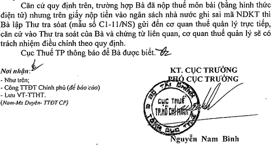

Thư tra soát theo Thông tư 84/2016/TT-BTC - Mẫu C1-11/NS, sử dụng khi phát hiện sai sót liên quan đến khoản nộp ngân sách nhà nước đã được cơ quan thuế hạch toán và thông báo.
Theo khoản 2 điều 17 Thông tư 84/2016/TT-BTC
"2. Thực hiện tra soát và điều chỉnh thông tin hạch toán thu ngân sách nhà nước
a) Đối với người nộp thuế
Trường hợp người nộp thuế phát hiện khai không chính xác các thông tin trên chứng từ nộp thuế, người nộp thuế phối hợp với ngân hàng/ cơ quan kho bạc nhà nước phục vụ người nộp thuế để xử lý sai sót trong việc nộp tiền vào ngân sách.
Trường hợp người nộp thuế phát hiện sai sót liên quan đến khoản nộp ngân sách nhà nước đã được cơ quan thuế hạch toán và thông báo, người nộp thuế lập thư tra soát (mẫu số C1-11/NS ban hành kèm theo Thông tư này) kèm theo chứng từ nộp thuế hoặc thông tin liên quan đến nội dung đề nghị điều chỉnh sai sót gửi cơ quan thuế."
Xem thêm: Theo Công văn Công văn số 3692/CT-TTHT ngày 24/4/2017 của Cục Thuế TP. HCM:

Mẫu Thư tra soát C1-11/NS theo Thông tư 84:
CỘNG HÒA XÃ HỘI CHỦ NGHĨA VIỆT NAM
Độc lập - Tự do - Hạnh phúc -----------------
THƯ TRA SOÁT
Kính gửi: …………………………………..……………..
Tên cá nhân/ đơn vị: …………………… Mã số thuế:...............................Địa chỉ: …………………….. Quận/Huyện: ……………. Tỉnh,TP: ............ Thực hiện nộp tiền vào NSNN bằng hình thức: Tiền mặt □ Chuyển khoản □ Nộp thuế điện tử □ Đã được NH/ KBNN: ……………………. trích TK số (nếu có): ................ để nộp vào NSNN theo: TK thu NSNN □ TK thu hồi hoàn thuế GTGT □ Số tiền: ………………………………. (Bằng chữ: ........................... ............................................................................................................. vào tài khoản của KBNN: ……………………………. Tỉnh, TP: ........ mở tại ngân hàng ủy nhiệm thu: .......................................................... Ngày thực hiện giao dịch: ……./ ………/ .............................................. Nội dung sai sót: ...................................................................... ...................................................................................................... ...................................................................................................... Nội dung đề nghị điều chỉnh: ................................................................ ...................................................................................................... ................................................................................. .................................................................................................... Đính kèm (chứng từ/tài liệu): ....................................................................... Kính đề nghị: …………………………………… xem xét, giải quyết./.
|
Tải Mẫu Thư tra soát C1-11/NS theo Thông tư 84 về tại đây:
Nếu bạn không tải về được thì có thể làm theo cách sau:
Bước 1: Để lại mail ở phần bình luận bên dưới
Bước 2: Gửi yêu cầu vào mail: ketoandieutam@gmail.com (Tiêu đề ghi rõ Tài liệu muốn tải)
------------------------------------------------------